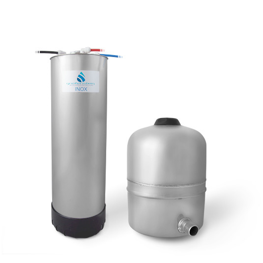

Direct Flow RO
Greifenstein Wasserveredelung INOX
INOX-Umkehrosmoseanlage für Zuhause im Edelstahl-Design mit Vorratstank und bis zu sechs Filterstufen.
Preis auf Anfrage
Technische Daten
| Bauart | Untertisch-Umkehrosmoseanlage mit Vorratstank |
| Filterwasser | 100–360 Liter pro Tag |
| Wirkungsgrad | 50 % Abwasser laut Hersteller |
| Filterstufen | Bis zu 6 |
| Membran | TFC, 0,0001 Mikron |
| Leitwert Eingang | bis 2.000 µS/cm |
| Filtermodul | Edelstahlgehäuse, Ø 15 cm, Höhe 46 cm |
| Gerätegewicht | ca. 8 kg |
| Tank | 18 Liter, Ø 29 cm, Höhe 38 cm, Leergewicht ca. 3 kg |
| Strom | Nicht erforderlich |
| Optionen | Mineralisierung und EM-Keramik |
| Nachfilter | UF-Membran als Post- und Sicherheitsstufe |
| Armatur | Edelstahl, Chrom oder 2-Wege-Armatur |
| Garantie | 2 Jahre; Verlängerung unter Herstellerbedingungen |
Datenhinweis
Die Angaben stammen aus öffentlich zugänglichen Hersteller- und Produktunterlagen. Nicht veröffentlichte Werte wurden nicht geschätzt. Änderungen und Modellvarianten sind möglich.